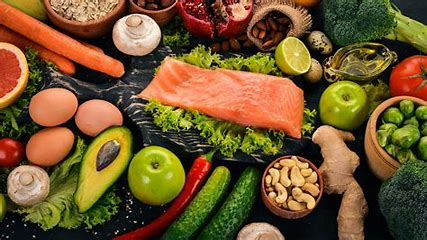

Eating a well-balanced diet can help you get the calories and nutrients you need to fuel your daily activities, including regular exercise. When it comes to eating foods to fuel your exercise performance, it’s not as simple as choosing vegetables over doughnuts. You need to eat the right types of food at the right times of the day. Learn about the importance of healthy breakfasts, workout snacks, and meal plans.
Your first meal of the day is an important one. According to an article published in Harvard Health Letter, eating breakfast regularly has been linked to a lower risk of obesity, diabetes, and heart disease. Starting your day with a healthy meal can help replenish your blood sugar, which your body needs to power your muscles and brain. Eating a healthy breakfast is especially important on days when exercise is on your agenda. Skipping breakfast can leave you feeling lightheaded or lethargic while you’re working out. Choosing the right kind of breakfast is crucial. Too many people rely on simple carbohydrates to start their day. A plain white bagel or doughnut won’t keep you feeling full for long. In comparison, a fiber- and protein-rich breakfast may fend off hunger pangs for longer and provide the energy you need to keep your exercise going. Follow these tips for eating a healthy breakfast: 1.Instead of eating sugar-laden cereals made from refined grains, try oatmeal, oat bran, or other whole-grain cereals that are high in fiber. Then, throw in some protein, such as milk, yogurt, or chopped nuts. 2.If you’re making pancakes or waffles, replace some of the all-purpose flour with whole-grain options. Then, stir some cottage cheese into the batter. 3.If you prefer toast, choose whole-grain bread. Then pair it with an egg, peanut butter, or another protein source.
Proper nutrition is imperative to maximize athletic performance. Without enough carbohydrates, proteins, and fats, athletes may feel sluggish and fatigued during a workout or ravenously hungry. Athletes may also need to focus on specific vitamins and minerals for fitness performance, such as iron, vitamin D, and zinc. Nutrition for physical activity is highly individualized. It is often helpful to consult with a sports dietitian to review your individual needs and make specific recommendations for your body and activity level.
While we frequently think about the health benefits of nutrition and physical activity separately, there is evidence that integrating both nutrition and physical activity produces greater benefits than focusing on one or the other. Additionally, research shows that exercise informs food choices, and individuals who exercise may make more nutritious choices. Nutrition may also support muscle recovery by reducing inflammation. One study showed that individuals who were more physically active and had higher antioxidant intake had lower levels of systemic inflammation.
Carbohydrates are our bodies' preferred source of fuel. They give us the energy we need to go about our day and maximize workouts and athletic performance.
Protein important for building muscle as well as the repair and recovery of bones, joints, and ligaments after a workout.
Fatskeeps us full and satisfied, helps cushion our bones and joints, and increases the absorption of fat-soluble vitamins A, E, D, and K.